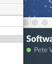
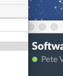

Python
Introduction to Programming with Python
New Section
This is a new section.
Introduction
 

Welcome to Python! This course has been designed to provide an introduction to the Python programming language and give you basic knowledge of its syntax and conventions.
Python is a dynamic programming language that is used in a variety of application domains. Python is based on object-oriented programming, similar to the likes of C++, Java, C#, Perl, Ruby, etc. This manual will include explanatory text along with code examples that you should be typing to follow along. All code is placed within snippets applicable to the language being used.
Python can be used in a wide variety of ways, and it has a vast ecosystem of libraries and tools for doing specialized kinds of programming - things like machine learning, statistics, language processing, and more. This class only scratches the surface of what Python can do, but it aims to give enough knowledge of the basics to explore more on your own.
Python 3 vs. Python 2
Python is somewhat unusual among programming languages in that two different versions of the language are currently in wide use at the same time, despite the newer version not being backward-compatible with the earlier version.
This manual is based on Python 3 (version 3.5 to be precise), which differs from the previous version Python 2.7 in certain fundamental ways. The most visible of these is the print function, which did not need parentheses in version 2 but requires them in version 3.
This article explains some of the major differences between versions 2 and 3 and offers some advice regarding which version to choose if you are just starting out.
The code snippets and exercises in this class are written in Python 3 and may not work correctly (or in some cases, work at all) on Python 2. Python 2.7 has not been updated since 2010, but it still has a large install base and many libraries are written for Python 2. Python 2.7 comes pre-installed on some computers, most notably those running MacOS.
Python 3 is the present and future of the language and is generally a better starting point for beginners, but if you will be working with a code base that uses Python 2, it will be helpful for you to have an understanding of the differences between the versions.
Running Python
Note that for the exercises in this lesson we will be using Repl.it interactive windows within this webpage. Outside of this lesson, you will be able to do everything we talked about within the terminal by following these instructions. If not already installed, Python can be downloaded from the following website: https://www.python.org/downloads/. After a straightforward installation process, find and run the IDLE (Python 3.5) application. This should open up the Python interpreter shell which allows the user to enter code line by line for testing or trial and error. The interpreter provides many options including being able to open a new script window where complete Python programs can be written in a built in Integrated Development Environment (IDE).
Macs have Python built-in and can be found via the Terminal. Search for and open the Terminal via the applications menu or Spotlight search. In the terminal, type in python. Note that this will be version 2.7. It is recommended that you use version 3.4 and above for this course. Please note that, on the DoIT computers, only the Windows partition has Python 3 installed.
Getting help
Python has a very detailed help menu that can be entered through the Python interpreter. Once you have the Python Interpreter opened, type in the following:
#helpMenu
>>> help()
This will enter you into the Python help utility. You can enter any module, keyword or topic into this utility to get more information. For example, to get more information about strings you would type str inside of the help module. This will bring up the help menu for strings specifically. To return to the interpreter, use quit.
#helpMenuModule
>>> help()
help> str #help on strings...
help> quit #quit help menu
Another approach to get help on certain modules in Python without the help menu is to insert the module names as an argument when in the interpreter. We do not need to quit from this as it is displayed in the interpreter.
>>> help(str) #help on strings...
If the built-in resources do not suffice, additional help can be found over at Lynda.com in the form of video tutorials. The Python website also offers support over at https://www.python.org/about/help/
Variables and Simple Data Types
Introduction and Printing
As in other programming languages, variables are symbols or names that stand for a specific value. Variables can be many different types in Python: numbers, strings, lists, tuples and dictionaries.
Variables follow this structure: variableName = value. Unlike programming languages like JavaScript and PHP, you do not need a keyword like var, const or let to initialize a variable; simply using the variable name, the assignment operator (aka the = sign) and a value will create a variable. And unlike more strongly typed languages like Java, you do not need to tell Python the type of the variable you are creating.
There are some naming conventions that need to be followed when naming a Python variable. Variable names cannot begin with a number or contain punctuation characters such as @, $, and %, with the exception of the underscore character. Python keywords cannot be used as variable names either. A list of such keywords is provided in the code snippet below.
#some incorrect variable syntax
>>> 313ph4nt = 349 #variable name begins with number
>>> s.t.s = 420 #contains special characters except underscore
>>> if = 'Weaponizing Didgeridoos by 2024' #"if" is Python keyword
#a list of some keywords that cannot be used as variable names
and del from not while
as elif global or with
assert else pass yield is
break except import print exec
in raise try continue finally
return for lambda class def
Python is a case sensitive language, so two variables named Buckybadger and buckybadger would be considered different variables. Most programmers follow the camelCase naming convention where the first letter of each word in the name is capitalized except for the first word. Variables may contain numbers but must start with either a letter or an underscore. Below is an example that explains the case sensitivity of Python.
#caseSensitivity
>>> buckyBadger = 5
>>> buckybadger = 10
>>> buckybadger + buckyBadger
15
Below is an example on variables and how to print them to the terminal to start us off.
Changing Variable Values
Variables do not have to keep the value that they begin with. They can be "reassigned" using '=', in the same way that we declared them in the previous example. Use the activity below to get an idea about how variable reassignment works.
Mathematical Operators
Working with numbers and basic math functions is very similar to other programming languages. Python also has a built-in math library which makes calling math functions very efficient. Before we dive into working with numbers in Python, we should define the different numeric types available:
-
int: Plain integers are whole numbers with precision limited up to 32 bits (meaning approximately 4.2 billion values are available).
-
long: Long integers are whole numbers with unlimited precision.
-
float: Floating point numbers contain decimal places with precision dependent on the system.
-
complex: Complex numbers have both a real and imaginary part.
Mathematical operators in python are used to add, subtract, multiply, divide, and get the remainders of numerical values. To use them, write them out as you would an equation in math.
Ex.
sum = x + y
difference = x - y
quotient = x/y
product = x*y
If you would like to use the solution elsewhere in your code, you will have to assign the value to a variable or return it in a function. Below is an example demonstrating how this is done.
Strings and Concatenation
Strings are sequences of characters and can be represented by a variable. These can contain numbers, but they would still be treated as characters rather than as numerical values.
Strings are created by placing text in between either single or double quotes. We will now use the print keyword to display text. Try out the snippets below.
#displayText
>>> print("Hello World!")
Hello World!
Congratulations! You have displayed your first string in Python. Strings in Python are easily combined and these combinations can be modified using the comma (,) and plus (+) operators. Type the following in the Python interpreter and press return after each:
#stringCombine
>>> print("Hello","World!")
Hello World!
>>> print("Hello"+"World!")
HelloWorld!
The comma operator will put a space between the strings and the plus operator will not include a space when the strings are combined. Text can also be assigned to variables which makes manipulation of the string easier.
#stringVariable
>>> s = "Hello World!" #assign text to variable named s
>>> print(s) #display variable s
Hello World!
String Methods
Python has a series of built-in methods that allow users to return manipulated string values. There are many more methods built into Python that are used on other data types. A method is considered a subroutine or a procedure that is associated with a given type and performs its function when called. In many other languages these are referred to as member functions or simply functions.
You have already defined the string s which we will be applying the string methods to. Perform the snippets below.
#stringMethods1
>>> print(s.capitalize())
Hello world!
>>> print(s.upper())
HELLO WORLD!
>>> print(s)
Hello World!
Since the string s is immutable, that means the string methods are not making changes to s. They are simply returning modified values of the string. Let's say that we want to modify the values of s so that all the letters in the string are uppercase. The snippet below does this.
#stringMethods2
>>> s = s.upper()
>>> print(s)
HELLO WORLD!
Below we have an interactive example as to how strings can be used, printed, and concatenated together.
Boolean Logic
When a value is boolean, it essentially means that it is either True or False. While this may seem too rudimentary to be helpful, every program on your computer is, in reality, just a sequence of 1s and 0s: a prime example of the power of boolean logic. Most, if not all programming languages utilize boolean values, typically with conditionals or loops (which will be discussed later), and Python is no exception.
The Boolean Type
If you want to directly use the boolean type in Python, simply use the values listed below.
- True— (the first letter is capitalized in Python)
- False— (the first letter is capitalized in Python)
Comparison Operators
A comparison operator is placed between two things being compared. A comparison operator is evaluated similarly to how other mathematical operators are, except a comparison operator always results in a boolean value. The comparison operators in Python include:
- == (equal)
- != (not equal)
- <> (not equal)
- < (less than)
- > (greater than)
- <= (less than or equal to)
- >= (greater than or equal to)
Here is an example using a comparison operator:
>>> print(1 == 2)
False
Logical Operators
Logical operators give you more flexibility when it comes to boolean values. With logical operators, you can combine multiple expressions into one. Instead of simply asking "Is x greater than 3?", you can use logical operators to ask "Is x less than three or greater than 5?" in the same line of code
Python has three logical operators (and, or, not). Their functions are described below.
- and— If both sides evaluate to True, then this evaluates to True, otherwise, this evaluates to False.
- or— If one or both sides evaluate to True, then this evaluates to True, otherwise, this evaluates to False.
- not— Inverts the result of whatever expression this precedes. If True, then False. If False, then True.
Here is an example:
Additional Data Types
Python, like many programming languages, has additional data types that are more suitable for sequences of information. In Python, these data types are defined as lists, tuples, and dictionaries. In this lesson we will be focusing on the most common one, lists.
Lists
The List is one of the most flexible data types in Python. A list in Python is a container that holds a number of other objects in a given order. The unique aspect of lists in Python is that the data types within the list can vary from element to element. In other programming languages, such as Java, list elements all need to be the same data type. The additional flexibility makes Python a very powerful and dynamic language.
#lists
>>> items = [1, 2.0, "three", 'four']
>>> print(items)
[1, 2.0, 'three', 'four']
Note that our list includes both an integer and a float, as well as strings that were defined with " " and ' '. We can see that there is a lot of flexibility that comes along with lists. You can even nest lists inside of lists to create 2D and 3D arrays, but that is outside the scope of this course.
List Indices
Just like strings, the elements of lists are identified using indices. An element of a list can be manipulated using the index i, and a range of elements using the i:j notation. Just like strings, the j index is non-inclusive. This is shown below.
#listsIndex1
>>> print(items)
[1, 2.0, 'three', 'four']
>>> print(items[0])
1
>>> print(items[2])
three
>>> print(items[1:3])
[2.0, 'three']
>>> print(items[0:3])
[1, 2.0, 'three']
The list items contains 4 elements and is therefore indexed to 3. Remember, the j index is not included in the return value of items[i:j]. It goes up until index j. In our case, if we wanted to include the last element in the list we would leave the j index blank to go all the way to the end of the list, or change the range to i:j+1. This same syntax applies for the beginning of the list. You can leave the i index blank instead of including the 0th index to return values beginning from the start of the list.
#listsIndex2
>>> print(items[0:4])
[1, 2.0, 'three', 'four']
>>> print(items[:])
[1, 2.0, 'three', 'four']
List Methods
Lists can be modified by using the append and insert methods. The append method will add an element to the end of the list, which will have the last index. The insert method will insert an element into a given index and then push the remaining list elements over to the right.
#listsMethods1
>>> items.append(6)
>>> print(items)
[1, 2.0, 'three', 'four', 6]
>>> items.insert(4, 5.0)
>>> print(items)
[1, 2.0, 'three', 'four', 5.0, 6]
Lists can also be used like a stack by using the append method to push items on to the list and the pop method to remove items. You can leave the argument for the pop function blank and it will remove the item at the last index of the list. Otherwise, you can define an index for the element to be removed. The function returns the value that is removed from the list, which could then be stored as a variable if desired. Type the following lines of code to see how to use the pop method.
#listsMethods2
>>> items.pop()
6
>>> print(items)
[1, 2.0, 'three', 'four', 5.0]
>>> items.pop(2)
'three'
>>> print(items)
[1, 2.0, 'four', 5.0]
The pop method returns the value that is removed from the list. This returned value can be set to a variable, which applies to any method that returns a value. To demonstrate, we are going to create an integer variable that will be assigned the value of a "popped" listed element.
#listsMethods3
>>> z = items.pop()
>>> print(z)
5.0
>>> print(items)
[1, 2.0, 'four']
>>> items.append(z)
>>> print(items)
[1, 2.0, 'four', 5.0]
Three additional methods that are useful are the max, min, and len (length) methods. The len method will return the number of elements in the list. Remember, the last indexed element in the list will be 1 less than the length of the list. The max method will return the highest value within the list. Similarly, the min method will return the lowest valued element in the list. The max and min functions will not work for the list named items as it contains a mix of strings and numbers. Let's pop the string and add another number to items.
#listsMethods4
>>> items.pop(2)
'four'
>>> items.append(3)
>>> print(items)
[1, 2.0, 5.0, 3]
>>> print(len(items))
4
>>> print(max(items))
5.0
>>> print(min(items))
1
Here's an interactive example for you to get started on working with lists of your own.
Control Flow
The control flow is the order in which individual segments of code, called "blocks", are executed. In general, the interpreter reads through files, top to bottom, executing each instruction as it is read. However, a program that does only one thing would be very limited in its usefulness. Thankfully, there are ways to manipulate the control flow, so your programs don't have to be linear, but instead, can have branching paths, repeating parts, reusable segments, and more.
While most languages use braces to designate code "blocks" with indentation being optional (though very strongly recommended for readability), the Python interpreter divides "blocks" based entirely on indentation. The following sections will demonstrate how to properly use indentation along with the control flow structures that Python provides.
Conditionals
A conditional statement is a method of control flow. Conditional statements allow you to decide which parts of the code should execute based on the circumstances at the time. Perhaps you want to do something based on what the user inputs, or what time it is, or when any other condition is met. That is what conditionals are for.
if Statements
An if statement checks the result of a subsequent expression and, if the result is true, executes the enclosed block of code. While not strictly necessary in Python, enclosing the conditional expression is generally considered good practice because it makes your code more readable and less prone to order-of-operations errors. An if statement is similar to a person saying "If X is the case, do this." Here is an example of a simple if statement.
#Checks if x is less than 3. If so, prints: 2 < 3
x = 2
if(x < 3):
print("x < 3")
elif Statements
elif statements are similar to if statements in that, they also check if a condition is true, but they only execute if the preceding if statement evaluated to false and they must immediately follow the block of code enclosed by the preceding if statement. An elif statement is similar to a person saying "Otherwise if Y is the case, do this." Let's update our code to use an elif statement in conjunction with an if statement.
#Checks if x is less than 3.
x = 6
if(x < 3):
print("less")
#If x is not less than 3, checks if x is greater than 5.
elif(x > 5):
print("greater")
else Statements
Finally, else statements are like elif statements, except they do not check a condition. Instead, an else statement's enclosed code only executes if none of the other preceeding if-elif conditions were met. Let's try putting if, elif, and else together.
#Checks if x is less than 3.
x = 4
if(x < 3):
print("less")
#If x is not less than 3, checks if x is greater than 4.
elif(x > 5):
print("greater")
#If x is not less than 3 or greater than 5, prints "between"
else:
print("between")
See how if/else functions work in practice and create your own using the window below:
Loops
A loop is a similar structure to a conditional, except that the enclosed code is run multiple times through a process called "iteration". Loops are both a fundimental and extremely useful construct in programming.
while Loops
A while loop works exactly as it sounds. It is equivalent to saying "While x is the case, do this." The syntax for a while loop is similar to an if statement. The enclosed code is run repeatedly until the condition just after the while keyword evaluates to False.
x = 10
while(x > 0):
print("x is: " + str(x))
x -= 1
for Loops
for loops are a little different in Python than most languages. In Python, a for loop needs an "iterable" type, which is something that would be discussed in a more advanced class. Suffice it to say that lists, tuples, and any other of the sequence types previously discussed are iterable. The syntax of a for loop in Python is as follows:
list1 = ["This", "Is", "Iteration"]
#for {variable name} in {iterable}
for item in list1:
#item is a new variable that has the value of the current item in the list
print(item)
See how a loop runs over a list and apply your current understanding below:
Functions
A function is a block of organized, reusable code that is used to perform a single, related action. Functions provide better modularity for your application and a high degree of code reuse. As you know, Python has a number of built-in functions like print(), but you can also create your own functions which are called user-defined functions.
Python has a large number of built-in functions. You already have experience calling these functions such as print(arg), max(arg), and len(arg). The text arg is a placeholder for the function argument. An argument is a parameter that is passed to the function and is referred to a piece of data while the function executes.
You have also looked at some functions that did not require any arguments, such as .pop() when the last item of a list was popped off. Functions can be defined to include arguments or not to include arguments, it just depends on how the functions are being used. For our example, we will be using two functions that include arguments.
User-defined Functions
Before we create a new function, there are rules that need to be followed for defining functions.
-
Function blocks begin with the keyword def followed the the function name and parentheses. It should look like: def functionName().
-
Any input parameters should be placed within these parentheses and separated by commas. You can also define parameters inside of these parentheses.
-
The code block for every function starts with a colon and is indented.
-
The statement return expression exits a function, optionally passing back a value to the caller. A return statement with no arguments is the same as return None.
Functions with Default Arguments
Function arguments must be included when you call them in the interpreter. If you forgot to include the second argument in the printBoth function you would receive the following error:
This can be avoided by including default arguments in the function definition. This allows you to include less parameters in the function call and the default parameter will be used. Additionally, you can overwrite the default parameter as you would normally call the function.
Switch back to script.py in your text editor and add the next code snippet below your previous function.
# printBoth with a default argument
def printBoth2(arg1, arg2="default"):
print(arg1)
print(arg2)
You will want to add the code to call the function as well.
# call the function, with arg2 taking its default argument
printBoth2("Hello")
After you type in the above code, save the file. It should look like the image below.
You can see that default arguments can be overwritten if needed. Feel free to test this out by adding a second argument to the printBoth2 function call. Default arguments help shorten function calls in some cases. This can be very useful with more complex functions.
Use this last interactive window to utilize everything you've learned so far:
Conclusion
With that, we conclude this introductory course to programming in Python. You should now be able to read and understand basic Python code, with the ability to write scripts and functions. Please leave a review of how this lesson went at this link. Do check out the Python help page at https://www.python.org/about/help/ and the Lynda.com page at https://www.lynda.com/Python-training-tutorials/415-0.html for additional resources. A quick Google search should help with any trouble you encounter. STS has free consultation services that can help a lot as well.
Feel free to also take our Python 2 class to further hone your skills, and learn about advanced Python topics.